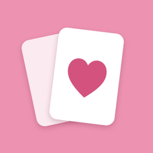

최애생활 · ChoeaeLife개인정보 처리방침
시행일: 2026년 11월 7일 · 적용 대상: iOS 앱 ‘최애생활’ 1.0 이상
최애생활 개발자(이하 ‘운영자’)는 ‘최애생활’ 앱(이하 ‘앱’)을 이용하는 분의 개인정보를 소중히 여깁니다. 앱은 회원가입·로그인·광고·분석 도구 없이 동작하며, 운영자는 이용자의 개인정보를 수집하지 않습니다.
1. 수집하는 개인정보
운영자는 어떤 개인정보도 수집·저장·전송받지 않습니다. 앱에는 운영자의 서버가 없고, 외부 분석·광고·추적 도구(SDK)를 쓰지 않습니다.
2. 기기 안에 저장되는 정보
이용자가 직접 입력한 아래 정보는 이용자의 iPhone 안(앱 저장 공간)에 저장되며, 운영자에게 전송되지 않습니다.
| 정보 | 용도 |
|---|---|
| 최애의 이름·그룹·별명·기념일, 대표색과 오늘 화면 꾸미기(배경 사진, 스티커) | 오늘 화면, 기념일 계산 |
| 일정, 기록, 지출, 오늘의 한 줄, 컬렉션(포토카드·앨범·굿즈) | 캘린더, 기록, 컬렉션과 월간 결산 |
| 이용자가 고른 사진 | 최애·컬렉션·기록 사진 표시. 앱에 저장할 때 크기를 줄이고 다시 저장하며, 위치정보(GPS) 등 촬영 정보는 남기지 않습니다. |
| 알림·통화·표시 설정 | 앱 설정 유지 |
홈 화면 위젯은 최애의 이름, 일수, 사진, 다음 일정을 같은 기기 안의 위젯 저장 공간에 두고 표시합니다. 이용자가 iPhone 기기 백업을 켜 두었다면, iOS가 이 정보를 다른 앱 데이터와 마찬가지로 기기 백업에 포함할 수 있습니다. 이는 Apple의 기능이며 운영자는 그 내용을 볼 수 없습니다.
3. iCloud 동기화(선택)
이용자가 앱에서 iCloud 동기화를 켜면, 위 정보가 이용자 본인의 iCloud 개인 데이터베이스에 저장되어 같은 Apple 계정의 다른 기기와 동기화됩니다. 운영자는 이 데이터베이스를 열람할 수 없으며, iCloud에 저장된 정보는 Apple의 개인정보 처리방침을 따릅니다. 동기화는 기본으로 꺼져 있고 언제든 끌 수 있습니다.
4. 사진과 알림 권한
- 사진: iOS의 사진 선택 화면을 사용하므로 앱은 이용자가 고른 사진에만 접근하며, 앨범 전체를 읽지 않습니다.
- 알림: 일정 알림을 켤 때만 iOS가 허용을 묻습니다. 알림은 기기 안에서 예약되며 서버를 거치지 않습니다.
5. 백업 파일과 컬렉션 공유 파일
‘백업 파일 만들기’로 만든 파일(.choeaelife)과 컬렉션 ‘공유’로 만든 파일(.choeaelifecard)은 이용자가 고른 위치나 상대(파일 앱, iCloud Drive, AirDrop, 메시지 등)로만 저장·전송됩니다. 운영자는 이 파일을 받거나 볼 수 없습니다.
- 백업 파일에는 앱의 모든 기록과 사진이 들어 있습니다. 비밀번호를 정하면 암호화되며, 비밀번호 없이 만든 파일은 암호화되지 않으니 보관과 전송에 주의해 주세요.
- 컬렉션 공유 파일에는 고른 아이템의 이름·종류·멤버·앨범·버전과 사진만 들어가며, 메모·가격·날짜·구입처는 들어가지 않습니다. 받는 사람은 미리 본 뒤 자기 컬렉션에 복사본을 추가할 수 있습니다.
6. 인앱 구입
현재 앱에서 판매하는 인앱 구입은 없습니다. 앞으로 추가되면 결제는 Apple App Store가 처리하며, 운영자는 이용자의 이름, 결제 수단, Apple 계정 정보를 받지 않습니다.
7. 제3자 제공·처리 위탁·국외 이전
운영자가 수집하는 개인정보가 없으므로 제3자에게 제공하거나, 처리를 위탁하거나, 국외로 이전하지 않습니다. 이용자가 켠 iCloud 동기화는 Apple의 서비스로 처리됩니다.
8. 보유 기간과 파기
운영자가 보유하는 개인정보는 없습니다. 앱에서 삭제한 정보는 기기에서 지워지고, iCloud 동기화를 켠 경우 같은 계정의 iCloud와 다른 기기에서도 지워집니다. 앱을 삭제하면 기기 안의 정보도 함께 지워집니다. 이전 데이터를 되돌릴 수 있도록 기기에 보관된 ‘복구 지점’은 앱의 ‘복구 지점 관리’에서 지울 수 있습니다.
9. 이용자의 권리
이용자는 앱 안에서 언제든지 자신의 정보를 보고, 고치고, 지울 수 있습니다. 운영자가 보관하는 정보가 없으므로 별도의 열람·삭제 요청 절차는 필요하지 않으며, 궁금한 점은 아래 연락처로 문의할 수 있습니다.
10. 아동의 개인정보
앱은 누구의 개인정보도 수집하지 않으며, 만 14세 미만 아동의 정보도 수집하지 않습니다.
11. 안전성 확보 조치
정보는 iOS의 앱 저장 공간(다른 앱이 접근할 수 없는 영역)에 저장되며, iPhone 잠금과 데이터 보호 기능의 보호를 받습니다. 앱은 정보를 운영자에게 보내지 않습니다.
12. 개인정보 보호책임자 및 문의
보호책임자: 최애생활 개발자
연락처: wlsdntjd123@gmail.com
13. 처리방침의 변경
이 방침이 바뀌면 이 페이지와 앱 업데이트 안내를 통해 시행 7일 전에 알립니다. 앱이 정보를 수집하게 되는 변경은 이용자의 동의를 먼저 받습니다.
Privacy Policy
Effective date: November 7, 2026 · Applies to the iOS app “ChoeaeLife” 1.0 and later
The ChoeaeLife developer (“we”) makes ChoeaeLife (“the app”). The app works with no account, login, ads or analytics, and we do not collect any personal information.
1. Information we collect
None. We do not collect, store or receive any personal information. We run no server for the app and use no third-party analytics, advertising or tracking SDKs.
2. Information stored on your device
What you enter is saved on your iPhone, inside the app’s own storage, and is never sent to us:
| Information | Used for |
|---|---|
| Names, groups, nicknames and dates of the people you follow; colors and Today decoration (background photo, stickers) | The Today screen and anniversaries |
| Events, records, expenses, daily notes and your collection (photocards, albums, goods) | Calendar, records, collection and monthly recap |
| Photos you choose | Showing pictures. They are resized and saved again, keeping no location (GPS) or other capture metadata. |
| Notification, currency and display settings | Remembering your settings |
Home Screen widgets show names, day counts, a photo and the next event from widget storage on the same device. If you turn on iPhone backup, iOS may include this information in that backup like other app data; that is an Apple feature and we cannot see it.
3. iCloud sync (optional)
If you turn on iCloud sync in the app, this information is stored in your own private iCloud database and synced to your other devices signed in to the same Apple Account. We cannot access that database; information in iCloud is covered by Apple’s privacy policy. Sync is off by default and you can turn it off at any time.
4. Photos and notifications
- Photos: The app uses the iOS photo picker, so it only receives the photos you choose and never reads your whole library.
- Notifications: iOS asks for permission only when you turn on an event reminder. Reminders are scheduled on the device and do not go through any server.
5. Backup files and collection files
Backup files (.choeaelife) and collection files made with Share (.choeaelifecard) are saved or sent only where you choose (Files, iCloud Drive, AirDrop, Messages and so on). We cannot receive or see them.
- Backup files contain all your records and photos. They are encrypted when you set a password; a file made without a password is not encrypted, so take care where you keep or send it.
- Collection files contain only the chosen items’ name, kind, member, album, version and photo — never notes, prices, dates or where you bought them. The receiver can preview them and add a copy to their own collection.
6. In-app purchase
The app currently sells no in-app purchases. If one is added later, payment will be processed by the Apple App Store, and we will not receive your name, payment method or Apple Account details.
7. Sharing, processors and transfers
Because we collect no personal information, we do not share it, use processors for it, or transfer it abroad. iCloud sync, when you turn it on, is an Apple service.
8. Retention and deletion
We hold no personal information. What you delete in the app is removed from the device and, with iCloud sync on, from your iCloud and your other devices. Deleting the app removes the information on the device. Recovery points kept on the device can be removed in Manage Recovery Points.
9. Your rights
You can view, correct and delete your information in the app at any time. As we keep nothing, no access or deletion request is needed; you are welcome to contact us with any question.
10. Children
The app collects no personal information from anyone, including children.
11. Security
Information is kept in the app’s private iOS storage, which other apps cannot access, and is protected by your iPhone passcode and Data Protection. The app does not send it to us.
12. Contact
Privacy contact: The ChoeaeLife developer
Email: wlsdntjd123@gmail.com
13. Changes
If this policy changes, we will post it here and mention it in the app update notes at least 7 days before it takes effect. Any change that would make the app collect information will ask for your consent first.